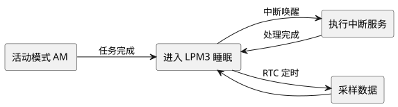

第 29 章 MSP430 低功耗单片机简介
学习目标
- 了解 TI MSP430 系列 16 位超低功耗单片机的架构特点与典型型号
- 掌握 MSP430 的 5 种低功耗模式（AM/LPM0/LPM3/LPM4/LPM4.5）及其差异
- 理解低功耗设计的核心范式："睡眠-中断唤醒-处理-返回睡眠"
- 能够阅读 MSP430 的低功耗 C 代码示例，分析其功耗优化策略
- 能够将 MSP430 与 STC89、STM32、ESP32 进行对比，为低功耗场景做出合理选型
MSP430是德州仪器（TI）推出的 16 位超低功耗混合信号单片机系列，自 1992 年发布以来已成为电池供电应用领域的事实标准之一。其特点包括：1.8 V~3.6 V 宽电压、待机功耗低至 0.5 µA、5 种低功耗模式、内置 16 位 ADC 与比较器、SRAM/FRAM 数据保持不丢失等。本章将介绍 MSP430 的架构特点、低功耗模式及设计范式。
29.1 MSP430 简介
MSP430 系列按内核可分为 MSP430F1xx/2xx/4xx/5xx/6xx（16 位 RISC）、MSP430FRxx（FRAM 版本）和最新推出的 MSPM0G/MSPM0L 系列（基于 32 位 Cortex-M0+，定位低功耗 + 高性价比）。下表给出几个典型型号的对比：
| 型号 | 内核 | 主频 | Flash | RAM | ADC | 典型功耗 | 定位 |
|---|---|---|---|---|---|---|---|
| MSP430F149 | 16 位 RISC | 8 MHz | 60 KB | 2 KB | 12 位 | 280 µA/MHz | 经典教学型号 |
| MSP430F5529 | 16 位 RISC | 25 MHz | 128 KB | 8 KB | 12 位 | 290 µA/MHz | USB + 高性能 |
| MSP430FR5994 | 16 位 RISC | 16 MHz | 256 KB FRAM | 8 KB | 12 位 | 120 µA/MHz | FRAM 铁电存储 |
| MSPM0G3501 | Cortex-M0+ | 80 MHz | 128 KB | 32 KB | 12 位 | 151 µA/MHz | 新一代低功耗 32 位 |
| MSPM0L1306 | Cortex-M0+ | 32 MHz | 64 KB | 4 KB | 12 位 | 99 µA/MHz | 超低价格入门 |
MSP430 的核心设计理念是"为低功耗而生"。从架构层面看，它通过以下机制实现超低功耗：
- 时钟系统：MCLK（主时钟）、SMCLK（子系统时钟）、ACLK（辅助时钟）三个独立时钟域，可按需开关。
- 即时唤醒：从 LPM3 模式唤醒到活动模式仅需不到 1 µs，几乎无延迟。
- 外设自主运行：定时器、ADC、比较器等可在 CPU 睡眠时独立工作，通过中断唤醒 CPU。
- FRAM 铁电存储：MSP430FRxx 系列使用 FRAM 替代 Flash，写入无需高压电荷泵，功耗更低且写入次数近乎无限。
- 混合信号集成：内置高精度 ADC（12-16 位）、比较器、DAC、运放，减少外部器件。
29.2 低功耗模式
低功耗是 MSP430 的标志性能力。CPU 与不同时钟域（MCLK 主时钟、SMCLK 子系统时钟、ACLK 辅助时钟）可独立开关，组合出多种工作模式：
| 模式 | CPU | MCLK | SMCLK | ACLK | 典型电流 | 唤醒源 |
|---|---|---|---|---|---|---|
| 活动 AM | 开 | 开 | 开 | 开 | 300 µA/MHz | — |
| LPM0 | 关 | 关 | 开 | 开 | ~85 µA | 中断 |
| LPM3 | 关 | 关 | 关 | 开 | ~1 µA | 中断/RTC |
| LPM4 | 关 | 关 | 关 | 关 | ~0.5 µA | 外部中断 |
| LPM4.5 | 关 | 关 | 关 | 关 | ~0.1 µA | RST/NMI |
低功耗设计的核心思想是：让 CPU 大部分时间处于睡眠状态，仅在外设事件发生时被中断短暂唤醒执行任务，处理完成后立即返回睡眠。对于每秒只采样一次的应用，LPM3 模式可将平均功耗压到 1 µA 量级，单节 CR2032 纽扣电池可工作数年。

查看 PlantUML 源码
@startuml
skinparam defaultFontName "Microsoft YaHei"
skinparam backgroundColor #ffffff
left to right direction
rectangle "活动模式 AM" as A
rectangle "进入 LPM3 睡眠" as B
rectangle "执行中断服务" as C
rectangle "采样数据" as D
A --> B : 任务完成
B --> C : 中断唤醒
C --> B : 处理完成
B --> D : RTC 定时
D --> B
@enduml29.2.1 各模式适用场景
- LPM0：CPU 关闭但 SMCLK 和 ACLK 仍运行。适合需要串口通信但 CPU 空闲等待的场景，如等待串口数据到达。功耗约 85 µA。
- LPM3：仅 ACLK（通常由 32.768 kHz 晶振驱动）运行。适合定时唤醒的场景，如每秒采样一次温度。RTC 可持续运行，功耗约 1 µA。这是最常用的低功耗模式。
- LPM4：所有时钟关闭，仅外部中断可唤醒。适合事件驱动场景，如等待按键按下。功耗约 0.5 µA，但 RTC 无法运行。
- LPM4.5：核心逻辑完全断电，仅复位引脚可唤醒。适合长期存储运输场景，功耗约 0.1 µA，但唤醒后需重新初始化所有寄存器。
29.3 低功耗 LED 闪烁示例
以下示例在 MSP430F5529 LaunchPad 上实现"每 1 秒切换一次 LED"，CPU 在两次切换之间进入 LPM3 深度睡眠，整板平均功耗不到 2 µA：
/* MSP430F5529 低功耗 LED 闪烁示例
晶振: LFXT = 32768Hz (ACLK)
Timer_A0: 增计数模式，输出比较中断 1s 触发
CPU 在中断间隙进入 LPM3，唤醒后切换 P1.0 LED
*/
#include <msp430.h>
int main(void) {
WDTCTL = WDTPW | WDTHOLD; /* 关看门狗 */
P1DIR |= BIT0; /* P1.0 设为输出，驱动红 LED */
P1OUT &= ~BIT0;
/* 配置 32.768kHz 外部晶振起振 */
P5SEL |= BIT4 | BIT5;
UCSCTL4 = SELA__LFXTCLK | SELS__DCOCLK | SELM__DCOCLK;
/* Timer_A0: 增计数，ACLK/1 = 32768Hz，分频 8 -> 4096Hz */
TA0CTL = TASSEL__ACLK | ID__8 | MC__UP | TACLR;
TA0CCR0 = 4096 - 1; /* 计满即 1s */
TA0CCTL0 = CCIE; /* 允许 CCR0 中断 */
__bis_SR_register(LPM3_bits | GIE); /* 进入 LPM3，开总中断 */
while (1); /* 实际不会执行到这里 */
}
/* Timer_A0 CCR0 中断服务程序 */
#pragma vector = TIMER0_A0_VECTOR
__interrupt void TIMER0_A0_ISR(void) {
P1OUT ^= BIT0; /* 翻转 LED */
/* 中断返回后自动恢复 LPM3，无需手动操作 */
}
对比要点：MCS-51 中实现同样功能时 CPU 必须保持活动状态轮询或使用普通定时器中断，平均功耗在毫安级（约 5-20 mA）；MSP430 借助 LPM3 + ACLK 驱动定时器，将平均电流降到微安级（约 1-2 µA），功耗降低了 3 个数量级。这是低功耗设计的核心范式。
29.3.1 代码逐行解析
以上代码的关键点：
WDTCTL = WDTPW | WDTHOLD：关闭看门狗定时器，防止其复位 CPU。MSP430 的看门狗默认开启，低功耗应用中通常先关闭。P1DIR |= BIT0：将 P1.0 设为输出方向。MSP430 的 GPIO 需要显式设置方向寄存器（DIR）和输出寄存器（OUT）。P5SEL |= BIT4 | BIT5：将 P5.4/P5.5 引脚切换为晶振功能，连接 32.768 kHz 外部低频晶振。ACLK 由该晶振驱动。UCSCTL4 = SELA__LFXTCLK | ...：统一时钟系统（UCS）配置，ACLK 选择 LFXT（32.768 kHz 晶振），SMCLK 和 MCLK 选择 DCO（内部高速振荡器）。TA0CTL = TASSEL__ACLK | ID__8 | MC__UP | TACLR：Timer_A0 时钟源选 ACLK，8 分频（32768/8 = 4096 Hz），增计数模式。TA0CCR0 = 4096 - 1：计数器从 0 计到 4095（共 4096 个计数），恰好 1 秒触发一次 CCR0 中断。__bis_SR_register(LPM3_bits | GIE)：设置状态寄存器，进入 LPM3 模式并开全局中断。CPU 在此语句后停止运行。#pragma vector = TIMER0_A0_VECTOR：声明中断向量，Timer_A0 的 CCR0 中断会跳转到此函数。P1OUT ^= BIT0：异或操作翻转 LED。中断返回后，CPU 自动回到 LPM3 睡眠状态。
while(1) 这行代码实际上永远不会执行到，因为 CPU 在进入 LPM3 后就停止了。它只是语法占位符。真正的"循环"是由定时器中断反复唤醒 CPU 实现的——每秒唤醒一次，翻转 LED，然后自动回到睡眠。这种"中断驱动"的编程模型是低功耗设计的核心。
29.4 与其他平台对比
将 MSP430 与本课程涉及的其他平台进行对比，有助于理解不同平台的定位差异：
| 维度 | STC89C52RC | STM32F407 | ESP32 | MSP430F5529 |
|---|---|---|---|---|
| 内核 | 8051 CISC | Cortex-M4 RISC + FPU | Xtensa LX6 双核 RISC | MSP430 16 位 RISC |
| 主频 | ~35 MHz | 168 MHz | 240 MHz（双核） | 25 MHz |
| Flash/RAM | 8 KB / 256 B | 1 MB / 192 KB | 448 KB / 520 KB | 128 KB / 8 KB |
| Wi-Fi/BLE | 无 | 无（需外接模组） | 原生集成 | 无 |
| ADC | 无内置 | 12 位 | 12 位 | 12 位 |
| 活动功耗 | ~10-20 mA | ~30-40 mA | ~80 mA（Wi-Fi） | ~7 mA (25MHz) |
| 待机功耗 | ~1 mA | ~10 µA (Standby) | ~10 µA (Deep Sleep) | ~0.5 µA (LPM4) |
| 典型场景 | 教学入门、低端控制 | 高性能控制、信号处理 | 物联网、智能家居 | 电池供电、传感节点 |
| 单价（2024 年） | ~3 元 | ~25 元 | ~15 元 | ~20 元 |
29.4.1 低功耗设计技巧
除了选择低功耗芯片，低功耗设计还需要在软件层面做以下优化：
- 降低时钟频率：功耗与主频近似成正比。不需要高性能时，将 MCLK 降到 1 MHz 甚至更低。
- 使用低频晶振：ACLK 用 32.768 kHz 晶振驱动，而非内部 DCO（约 1 MHz）。低频晶振功耗远低于高频振荡器。
- 最大化睡眠时间：将任务集中在短时间内完成，然后立即进入 LPM3。CPU 活动时间占比应小于 1%。
- 关闭未用外设：ADC、比较器、运放等外设不用时应关闭，每个外设都会消耗几 µA 到几百 µA。
- 配置 GPIO 为输入并关闭上拉：悬空的输入引脚可能因噪声反复翻转，消耗额外电流。未用引脚应设为输出低或输入加上拉。
- 使用中断而非轮询：轮询需要 CPU 持续运行，中断可以让 CPU 睡眠等待事件。
本章小结
- MSP430是 TI 的 16 位超低功耗混合信号单片机，专为电池供电应用设计。1.8-3.6 V 宽电压、活动功耗 120-290 µA/MHz、待机功耗低至 0.1 µA（LPM4.5）。
- MSP430 有 5 种低功耗模式：AM（活动）、LPM0（CPU 关）、LPM3（仅 ACLK 运行，~1 µA，最常用）、LPM4（全时钟关，~0.5 µA）、LPM4.5（核心断电，~0.1 µA）。
- 低功耗设计的核心范式是"睡眠-中断唤醒-处理-返回睡眠"：CPU 大部分时间处于 LPM3 睡眠，仅在外设事件发生时被中断短暂唤醒。MSP430 唤醒延迟不到 1 µs。
- MSP430 适合水表/气表/传感器节点等电池供电场景；新一代 MSPM0 系列已转向 Cortex-M0+ 内核，兼顾低功耗与 32 位性能。
- 低功耗设计不仅靠硬件，还需软件配合：降低时钟频率、使用低频晶振、最大化睡眠时间、关闭未用外设、使用中断而非轮询。
思考题与习题
- MSP430 的 LPM3 与 LPM4 有何差别？为什么 RTC 通常只能在 LPM3 而非 LPM4 下持续运行？
- 在本章的低功耗 LED 闪烁示例中，
while(1)语句为什么永远不会执行到？CPU 是如何实现"每秒翻转一次 LED"的？ - 计算：假设 MSP430F5529 在 LPM3 模式下平均功耗为 1.5 µA，活动模式（处理数据）平均功耗为 3 mA，每次唤醒处理耗时 10 ms，每小时唤醒一次。使用一节 CR2032 纽扣电池（220 mAh），可工作多少年？
- 对比 MSP430 和 STM32L 系列（低功耗版 STM32）的低功耗能力，分析 16 位架构在低功耗方面的优势与劣势。
- 设计一款户外温湿度记录仪，要求一节 AA 电池工作一年，每 10 分钟采样一次温湿度并存储。请给出选型方案（MCU + 传感器 + 电源管理）并估算平均功耗。
- 查阅资料，了解 MSP430FRxx 系列的 FRAM（铁电存储）相比传统 Flash 有何优势，这些优势如何助力低功耗设计。
参考文献
- TI 官方. MSP430x5xx/6xx Family User's Guide (SLAU208) [Z]. 2018. https://www.ti.com/
- TI 官方. MSP430F552x Datasheet [Z]. 2018. https://www.ti.com/
- TI 官方. MSPM0G350x 32-bit Microcontrollers Datasheet [Z]. 2023. https://www.ti.com/
- 张毅刚. MSP430 系列单片机原理及应用——C 语言程序设计与开发 [M]. 北京：机械工业出版社, 2021.
- TI 官方. MSP430 Low-Power Modes Application Report (SLAA338) [Z]. 2019.